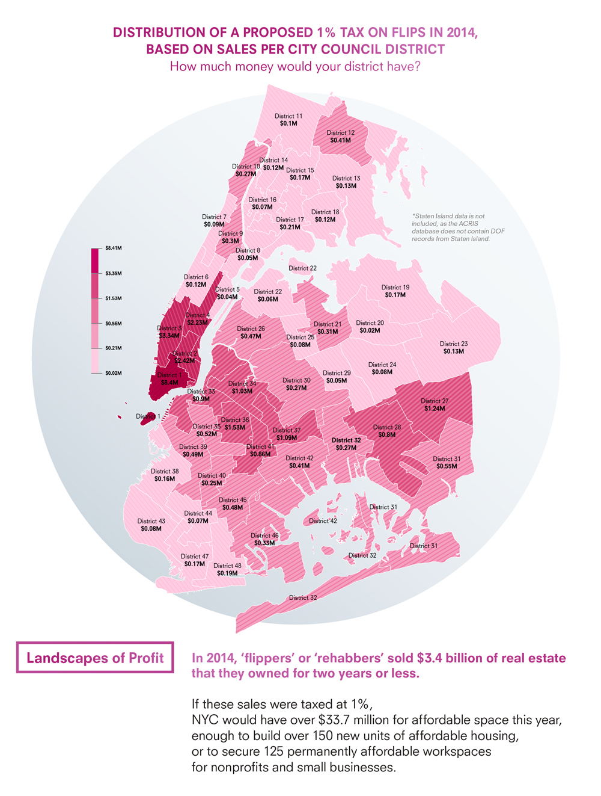

Landscapes of Profit is a visualization of a proposed “flip tax” of 1% on properties bought and sold within two years. The authors show that the tax would have generated $33.7 million last year to fund the City’s affordable space agenda: enough to build 150 new units of affordable housing or to secure 125 permanently affordable workspaces for nonprofits and small businesses.
DOWNLOAD REPORT.
MEASUREMENT
Financial measurement dominates the spatial realm: property appraisal, valuation, underwriting, dollars per square foot, rates of return, dividend yields. Standard measuring sticks for space privilege extractive calculation about built environments. Imagine, however, if standards of measurement in real estate were not at odds with the experiences of 99% of residents of the city. Imagine measures for community gatherings per month, artworks per square foot, or community garden yields. Great cities attract residents and tourists with their opportunities for public culture, green space, local art, and street vibrancy -- not their return on investment in real estate. The long term residents who have cultivated gardens, established small businesses, and beautified neighborhoods for decades are now being displaced by rising real estate values that are based on the social spaces they helped to create. How might we measure investment in real estate and concern for local community simultaneously?
PROPOSAL
Property flipping is a practice whereby a recently acquired property is resold, often for a considerable profit. In the last ten years, $23 billion of flipped properties have sold in New York City. Landscapes of Profit measures the amount of money that would be generated if a 1% surcharge or “tax” were placed on sales of flipped properties, and proposes earmarking this tax for a fund for affordable space. If such a tax had been implemented from 2004 to the present, the tax would have raised an average of $23 million per year from over $23 billion in sales. Last year, it would have raised over $33 million for affordable space.
RATIONALE
One of the biggest challenges facing the de Blasio administration is how to fund the City’s affordable housing agenda. While the New York City 421a and J51 tax abatement programs provide critical incentives for the construction and renovation of affordable units, many of these regulatory agreements have expiration dates, allowing the City to lose nearly as many affordable units as it creates. As nearly 70 percent of Brooklyn home sales go to hedge funds, investors, and international buyers, some of that investment must be captured for local wealth, resilient culture, and civic engagement. The City must create additional revenue for permanently affordable housing and workspaces.
IMPACT
If 1% of the sale price of “flipped” or “rehabbed” properties bought and sold within two years were earmarked for permanently affordable space, the 2015 fund would draw 1% from the $3.37 billion dollars of “flip” sales in 2014, providing $33.7 million dollars for the fund for affordable space this year, enough to build 150 new units of affordable housing or to secure 125 permanently affordable workspaces for nonprofits and small businesses. The 2016 fund would draw from 1% of “flip” sales in 2015, which reached $1.8 billion in May of this year, generating $18.3 million of possible revenue for affordable space in 2016 so far. If such a tax had been implemented from 2004 to the present, the tax would have raised an average of $23 million per year from over $23 billion in sales.
If the fund supported affordable space in the same districts where the flip sales occurred, the following districts would receive community benefit funds:
City Council District 1 (Lower Manhattan) would have 1% from the $840 million in “flips”, or $8.4 million in additional revenue from “flips” in 2014 in that district.
City Council District 3 (Hell’s Kitchen, Chelsea, the West Village, and parts of Flatiron, SoHo and the Upper West Side) would have $3.3 million from 2014 “flips” in that district.
City Council District 4 (Upper East Side, Central Park South, Grand Central, Tudor City, Waterside, Peter Cooper Village, Carnegie Hill, Stuyvesant Town, United Nations; part of Yorkville, Turtle Bay) would have $2.2 million from 2014 “flips” in that district.
City Council District 36 (Bedford Stuyvesant, northern Crown Heights) would have $1.5 million from 2014 “flips” in that district.
City Council District 27 (St. Albans, Hollis, Cambria Heights, Queens Village, Addisleigh Park, Jamaica, and Springfield Gardens) would have $1.25 million from 2014 “flips” in that district.
City Council District 37 (Cypress Hills, Bushwick, City Line, Oceanhill-Brownsville, and East New York) would have $1.1 million from 2014 “flips” in that district.
City Council District 28 (Richmond Hill, Rochdale, South Ozone, and Jamaica) would have $0.8 million from 2014 “flips” in that district.
City Council District 31 (Laurelton, Rosedale, parts of Springfield Gardens, Bayswater, Hammels, Arverne, Edgemere, and Far Rockaway) would have $ 0.6 million from 2014 “flips” in that district.
Over the past decade, the highest concentration of flips took place in 1st, 3rd, 4th, 27th, 28th, 35th, 37th, and 41st City Council Districts. In our large printed map on view at the Storefront for Art and Architecture until September 12th, we chose to isolate City Council Districts in Brooklyn and Queens because these boroughs are seeing the most for-sale inventory growth in the City today.
POLITICAL WILL
As the New York City Real Estate Investment Cooperative and #SAVENYC demonstrate that New Yorkers are hungry for ways to secure space for small businesses, local arts groups, and service organizations, funding for affordable space must be secured to show that development without displacement is possible. Landscapes of Profit is visual material to spark debate about the creation of legislation for a “flip tax” to preserve and create affordable space. The authors welcome commentary, contributions, and support for a visualization of the impact of the proposed changes in a flip tax: info@landscapesofprofit.com
METHODOLOGY
Information about sales, displayed here by council district, comes from 2003-2015 data from ACRIS (Automated City Register Information System) of the New York City Department of Finance, and MapPLUTO (Map Primary Land Use Tax lot Output) of the New York City Department of City Planning. We define a "flip" as the sale of a property of any building class that occurs within 24 months of the date of purchase. We calculate the real estate transfer “flip tax” as 1% of the sales price on properties bought and sold within 24 months. In addition, to make sure that we are not proposing a “tax” on property owners whose sales only cover the costs of renovation, we have excluded sales with under $100,000 profit in 24 months. We have also excluded sales of more than 500% of the purchase price 24 months prior so that outliers or data errors would not skew our findings. If we were to include these low and high "flips" in future calculations, we would have more money in our community benefit fund, but we wanted to make a conservative estimate to begin a conversation about the possibility of additional revenue for a fund to support development without displacement.
COMMENTARY
We understand that developer-led displacement, banking on vacancy, untaxed AirBnB rentals, construction as harassment, and landlord abuses are also causes of concern that should be visualized to support campaigns and legislation for affordable space. We chose to focus on the feasibility of a “flip tax” because we were inspired by The Philadelphia Coalition for Affordable Communities’ antispeculation tax and their corresponding Development without Displacement report. We wanted to visualize the impact of “flipping” or “rehabbing” in New York City to see if such a “tax” would be taken up in addition to the mansion tax as proposed legislation for affordable space revenue generation. We understand that some property owners would simply wait 25 months to sell properties, and that models for future revenue based upon a “flip tax” should be created to understand and implement legislation with teeth. The authors welcome commentary, contributions, and support for a visualization of the impact of a flip tax as well as the proposed changes in the mansion tax: info@landscapesofprofit.com
EXISTING TAXES
The New York State Real Estate Transfer Tax (RETT) is imposed on real property conveyances at a rate of $2 per $500 of consideration. For certain qualified transfers to Real Estate Investment Trusts (REITs) the tax is reduced to $1 per $500 of consideration. This reduced tax rate for REITs had been set to expire in late 2014, but was recently extended to September 1, 2017. New York City imposes a Real Property Transfer Tax (RPTT) of 1% on residential properties if the value is $500,000 or less, of 1.425% if the value is more than $500,000 for residential properties or less than $500,000 for commercial properties, and of 2.625% if the value is more than $5,000 for commercial properties. New York State first adopted its Real Estate Transfer Tax in 1968, while New York City enacted its Real Property Transfer Tax in 1959. http://www1.nyc.gov/site/finance/taxes/property-real-property-transfer-tax-rptt.page
AUTHORS
Dan Taeyoung operates at the intersection of architecture, technology, and community. He is interested in radical architecture as a built manifestation of applied anthropology and activist real estate. He is co-founder of Prime Produce, an intentional co-working ‘guild’ for social good, and Adjunct Assistant Professor at Columbia University Graduate School of Architecture, Planning and Preservation, where he teaches on architectural representation and experimental design tools.
Caroline Woolard is an artist and organizer whose interdisciplinary work facilitates social imagination at the intersection of art, urbanism, and political economy. After co-founding and co-directing resource sharing networks OurGoods.org and TradeSchool.coop from 2008-2014, Woolard is now focused on her work with BFAMFAPhD.com to raise awareness about the impact of debt on culture and on the NYC Real Estate Investment Cooperative to create and support truly affordable commercial space for cultural resilience and economic justice in New York City. Woolard is a lecturer at the New School and the School of Visual Arts. Her work is featured in Art21’s New York Close Up documentary series.
Chris Henrick recently graduated from the Parsons MFA Design and Technology program at the New School in New York City. His MFA thesis was a web app he conceptualized and coded called "Am I Rent Stabilized?" that seeks to solve the problem of NYC landlords lying to tenants about being rent-regulated and illegally deregulating rent-stabilized apartments. In his spare time Chris helps co-organize and facilitate Maptime-NYC, a volunteer group dedicated to educating non-experts about GIS, cartography, and interactive web-mapping.
John Krauss is a civic hacker and New York City housing data wonk. He first became interested in patterns of lending and speculation in the city when doing research for the Red Lines exhibition at the Queens Museum, which illustrated the impact of predatory loans just as the fallout of the subprime crisis began to hit hard in the summer of 2009. He cut his NYC housing chops as a data analyst at the Furman Center, helping ascertain expiration dates for an insane variety of affordability programs. He is now a tech fellow at the GovLab, building tools to make open data accessible and usable.
Ingrid Burrington writes, makes maps, and tells jokes about places, politics, and the weird feelings people have about both. Her most recent work has focused primarily on infrastructure and magic.